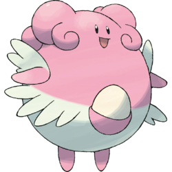
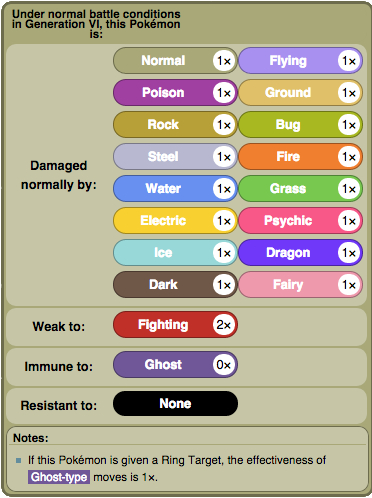
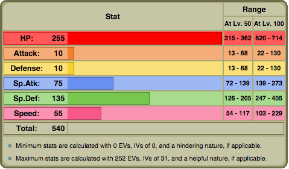
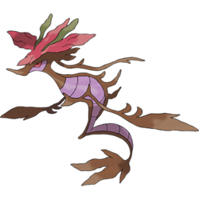
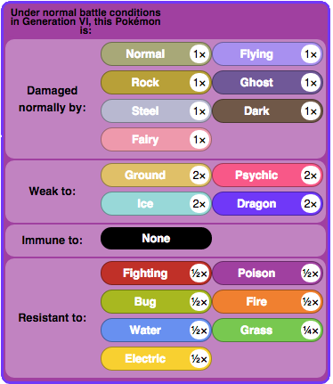
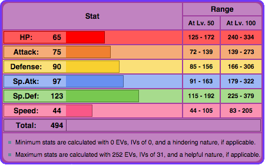
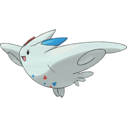
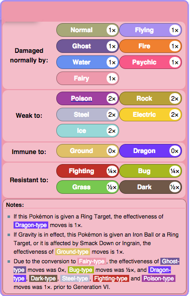
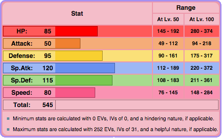

Special Tanks
Blissey
Blissey is one of the most powerful special tanks there is. Not only does it have the highest health in the game, its Sp. Defense is also significantly high. The fact that Fighting is its only weakness is also pretty nice. Many people raise Blissey's Defense in EVs and make it have a Bold Nature to try to raise its physical endurance. Blissey can also be raised in Health and Sp. Defense.
 | Move 1: Seismic Toss | Move 2: Flamethrower |
| Move 3: Toxic | Move 4: Soft-Boiled |
Dragalge
Dragalge is a very good option to carry an Assault Vest, therefore act as a special tank. Its defensive stats are very good, and carry Dragalge very well. EVs should be invested in Sp. Defense, and then evenly among HP and Sp. Attack. If Assault Vest is not chosen, Black Sludge is another option. Adaptability is the best option for its ability.
 | Move 1: Sludge Wave/Sludge Bomb | Move 2: Dragon Pulse |
| Move 3: Hydro Pump/Scald | Move 4: Thunderbolt/Shadow Ball |
Togekiss
Togekiss is also a strong option because not only does its Sp. Defense have enough to stop many sweepers, but it also has reliable Sp. Attack to inflict effective damage back. Togekiss needs its ability Serene Grace to help boost the flinch of Air Slash, and Leftovers should be held as well to regain more health. Calm is its best nature, and EVs should be invested in Sp. Defense, HP, and either Sp. Attack or Speed.
 | Move 1: Air Slash | Move 2: Aura Sphere |
| Move 3: Thunder Wave | Move 4: Roost |